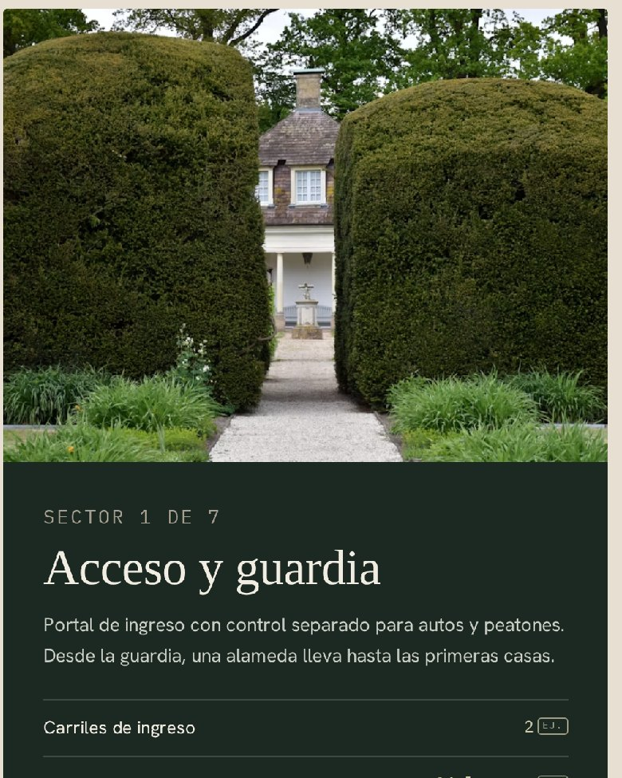

Demo de diseño · barrio ficticio
UMBRAL Canning
Lanzamiento de un barrio privado en Canning
Sitio de lanzamiento inmobiliario para un barrio inventado. Tiene un masterplan que se recorre por sectores, un simulador para armar la casa y un mapa de la zona.
- Masterplan de 7 sectores
- Simulador de vivienda
- Consulta lista para enviar